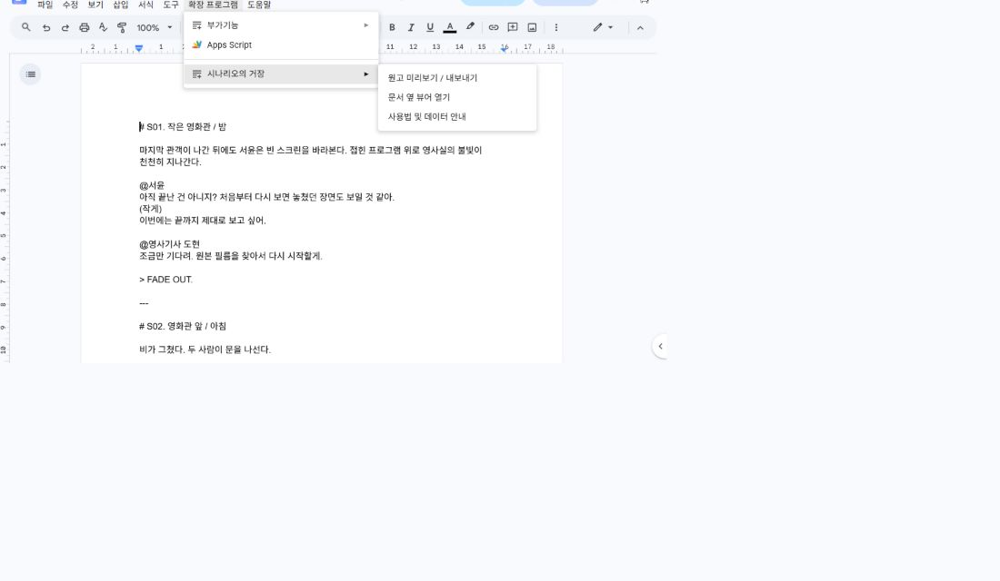
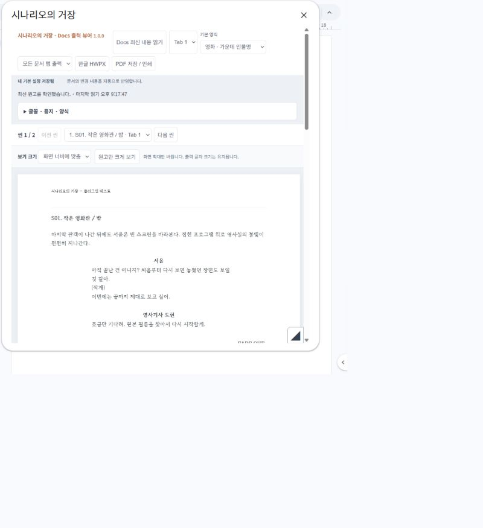
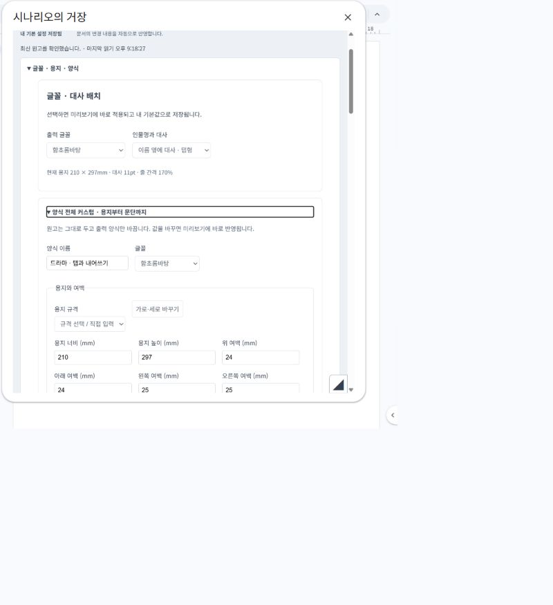
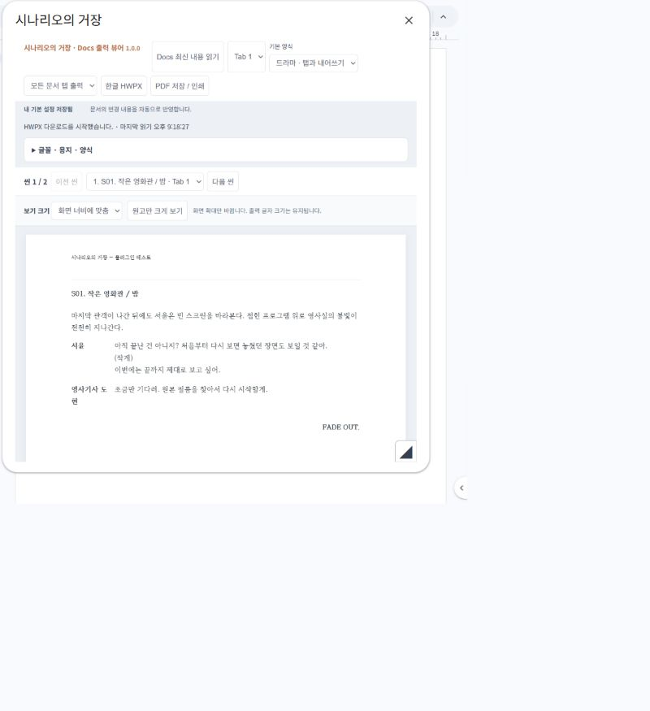

처음 쓰는 분을 위한 안내
원고를 쓰는 일부터,
대본을 건네는 순간까지.
원고는 익숙한 Google 문서에서 쓰세요.
시나리오의 거장은 그 원고를 읽어, 원하는 대본 모양으로 보여주고 저장합니다.
두 가지 표시만 기억하세요.
장면 제목 앞에는 #, 말하는 사람 이름 앞에는 @를 붙입니다. 지문은 다른 표시 없이 평소처럼 쓰세요.
- #작은 영화관 / 밤처럼 장면을 시작합니다.
- 한 줄 비운 뒤, 지문을 씁니다.
- @서윤을 쓰고 바로 다음 줄부터 대사를 씁니다.
- 대사가 끝나고 지문으로 돌아갈 때는 한 줄을 비웁니다.
장면 번호는 직접 쓰지 않아도 됩니다. 출력할 때 1. 2. 3.이 붙고, 양식 설정에서 끌 수도 있어요.
이렇게 써 보세요. 아래 예시는 그대로 복사해서 Google 문서에 붙여넣어도 됩니다.
#작은 영화관 / 밤 마지막 관객이 나간다. 서윤은 빈 스크린을 바라본다. 도현이 영사실 문을 열고 고개를 내민다. @서윤 아직 끝난 건 아니지? 처음부터 다시 보면 놓쳤던 장면도 보일 것 같아. @도현 조금만 기다려. 처음부터 다시 시작할게. 서윤이 접힌 프로그램을 조심스럽게 펼친다.
사진이나 장면 스케치는 Docs의 삽입 → 이미지로 넣으세요. ‘텍스트 줄 안’ 배치를 권장합니다. 굵게·기울임은 Docs의 해당 버튼으로 적용하세요.
다른 상황의 입력법도 살펴보기 →원고 위쪽의 ‘확장 프로그램’을 누르세요.
확장 프로그램 → 시나리오의 거장 → 원고 미리보기 / 내보내기 순서입니다. 원고를 다른 곳으로 복사할 필요는 없습니다.

처음 실행하면 Google이 권한을 묻습니다. 사용할 계정과 앱 이름, 요청 권한을 확인하세요. 현재 문서 접근과 창·사이드바 표시 권한을 사용합니다. 조직에서 차단하거나 예상과 다른 권한이 나오면 진행하지 말고 문의해 주세요.
옆에 작게 두고 쓰려면 같은 메뉴의 문서 옆 뷰어 열기를 선택하세요. 메뉴가 없다면 문서를 새로고침하고 설치한 계정인지 확인하세요.
쓴 원고가 대본으로 보입니다.
뷰어가 열리면 미리보기를 확인하세요. 내용이 비어 있거나 방금 고친 부분이 안 보이면 위쪽의 현재 Docs 읽기 또는 Docs 최신 내용 읽기를 누릅니다.
문서 수정은 자동으로 확인합니다. 입력한 글자가 즉시 나타나지는 않을 수 있으니, 저장하기 전 최신 내용을 한 번 확인해 주세요.
- 씬 목록 / 이전 씬 / 다음 씬: 보고 싶은 장면으로 이동합니다.
- 보기 크기: 화면에서 편하게 읽을 크기를 고릅니다.
- 원고만 크게 보기: 설정을 접고 원고에 집중합니다.
보기 크기는 화면 확대입니다. 저장할 파일의 글자 크기는 다음 단계의 글꼴 · 용지 · 양식에서 바꾸세요.
{kind=link}

원고는 그대로.
제출할 모양만 바꾸세요.
- 뷰어 위쪽 기본 양식에서 탭형 또는 가운데 양식을 고릅니다.
- 글꼴 · 용지 · 양식을 누르면 자세한 설정이 펼쳐집니다.
- 글꼴과 대사 배치를 먼저 고르세요. 더 세밀하게 바꾸려면 양식 전체 커스텀 · 용지부터 문단까지를 펼칩니다.
- 용지 크기, 여백, 글자 크기, 인물명·대사 위치를 조절하고 미리보기를 확인합니다. 값은 변경할 때 반영됩니다.
처음에는 기본 양식으로 시작해도 충분합니다. 설정 후 내 기본 설정 저장됨이 보이면 다음에도 같은 설정으로 시작할 수 있어요.
이 과정은 Docs 원문의 내용이나 모양을 덮어쓰지 않습니다. 동료는 같은 원고에서 자신의 출력 양식을 고를 수 있습니다.
{kind=link}

한글 파일 또는 PDF로
건네세요.
한글에서 편집할 파일이 필요하다면
위쪽 한글 HWPX를 누르세요. 내려받은 파일은 보통 컴퓨터의 ‘다운로드’ 폴더에 있습니다. 확장자는 .hwpx이며, 오래된 .hwp 형식과는 다릅니다.
읽거나 인쇄할 파일이 필요하다면
PDF 저장 / 인쇄를 누른 뒤, 인쇄 창의 대상(프린터)을 PDF로 저장으로 고릅니다. 저장 위치와 파일 이름을 정하면 끝입니다.
PDF는 배율 100% · 여백 없음 · 머리글과 바닥글 끄기로 확인하세요. 기기마다 인쇄 창의 항목 이름은 조금 다를 수 있습니다.
보내기 전, 저장한 파일을 한 번 열어 보세요. 설치된 글꼴과 프로그램에 따라 줄바꿈과 쪽 수가 달라질 수 있습니다.
{kind=link}

같이 쓰는 원고도, 그대로.
공유와 댓글, 제안, 이전 원고로 돌아가기는 Google Docs에서 사용하세요. 중요한 수정 전에는 파일 → 버전 기록 → 현재 버전 이름 지정으로 ‘초고’, ‘회의 후 수정’처럼 이름을 붙여 두면 찾기 쉽습니다.
공동 작업과 버전 기록 팁 →여기서 막혔나요?
메뉴가 안 보여요.
문서를 새로고침하고, 설치한 Google 계정으로 열었는지 확인하세요. 현재 스토어는 심사 중이므로 처음 방문한 분에게 메뉴가 저절로 생기지는 않습니다. 테스트 안내를 받은 분은 그 문서에서 시작해 주세요.
대사와 지문이 섞여 보여요.
이름 앞의 @를 확인하세요. 대사 뒤에 지문을 쓸 때는 한 줄을 비우세요. 빈 줄 뒤에도 같은 인물이 말한다면 @이름을 다시 적습니다.
원고를 고쳤는데 아직 예전 내용이에요.
Docs의 저장이 끝났는지 확인한 뒤 ‘Docs 최신 내용 읽기’를 누르세요. 오류가 계속되면 뷰어를 닫고 문서 메뉴에서 다시 열어 주세요.
파일이 어디에 저장됐는지 모르겠어요.
브라우저 오른쪽 위의 다운로드 목록 또는 컴퓨터의 다운로드 폴더를 확인하세요. PDF는 인쇄 창에서 ‘PDF로 저장’을 선택한 뒤 저장 버튼까지 눌러야 파일이 만들어집니다.
해결되지 않으면 도움말 · 문의로 알려 주세요. 원고 내용과 계정 정보는 가리고, 오류 문구와 막힌 단계만 보내셔도 됩니다.
사진은 가상의 예제 원고로 촬영한 실제 테스트 화면입니다. 계정 정보·개인 문서·브라우저 주소는 포함하지 않았습니다. 화면 속 예제는 입력 규칙을 모두 보여주기 위한 것이 아니며, 새 원고는 위의 짧은 예시로 시작하세요. 배포 버전에 따라 버튼 이름과 배치가 조금 달라질 수 있습니다.